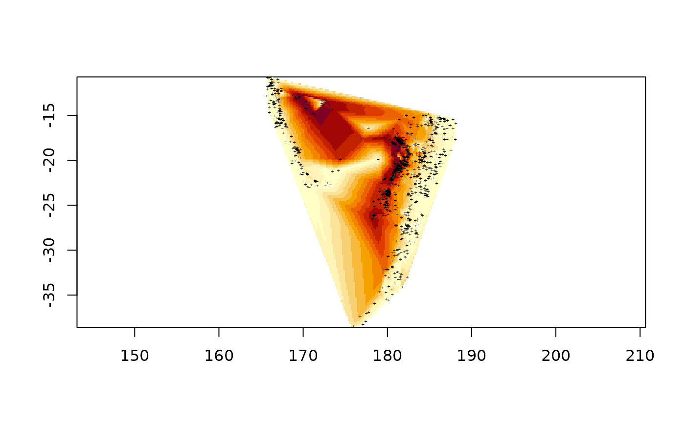
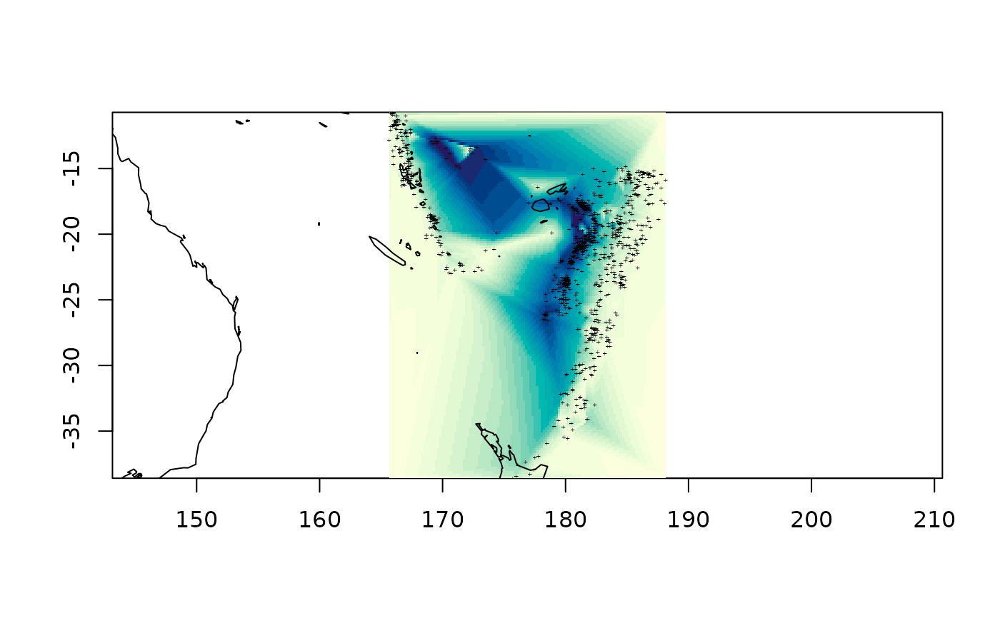
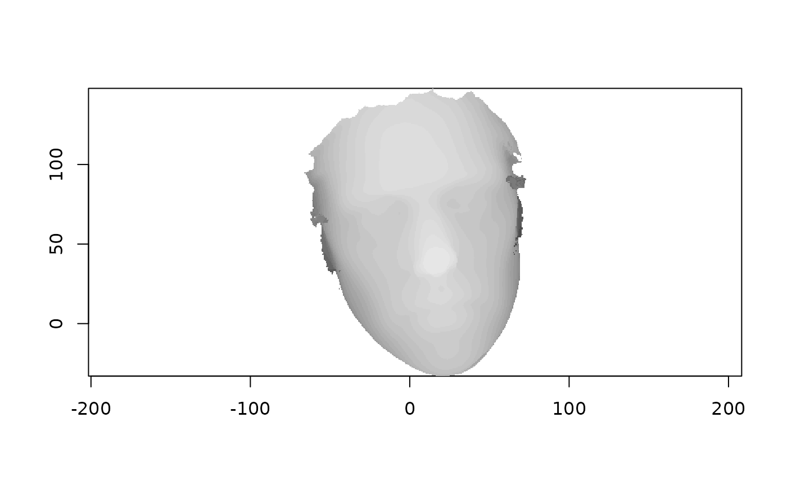

Create a grid by interpolating across triangles.
Usage
mesh_raster(x, grid = NULL, n = 128, ...)
# S3 method for class 'mesh3d'
mesh_raster(x, grid = NULL, n = 128, ...)
# S3 method for class 'matrix'
mesh_raster(x, grid = NULL, n = 128, ...)
# S3 method for class 'data.frame'
mesh_raster(x, grid = NULL, n = 128, ...)Arguments
- x
a matrix or data frame of three columns, or a
mesh3d- grid
a
grid_spec()to interpolate onto, orNULLfor a default one- n
cells across, when
gridis not supplied- ...
passed to methods, and on to
grid_barycentric()
Details
For x-y-z input this is grid_barycentric() with the arguments arranged
differently:
triangulate, then estimate each cell from the triangle containing it. The
difference is that mesh_raster() also takes a mesh3d, where the triangles
already exist and no triangulation is needed.
That case is worth having because it runs the argument backwards. A grid is one particular mesh – a regular one, with the values at the vertices – so turning an arbitrary mesh into a grid is resampling one mesh onto another, and barycentric interpolation is how you do it either way.
Examples
## interpolate from raw points
xyz <- quakes[c("long", "lat", "depth")]
xyz$depth <- -xyz$depth
gx <- mesh_raster(xyz)
#> 2 duplicated coordinates collapsed with mean()
rat <- 1/cos(mean(xyz[["lat"]]) * pi/180)
plot(gx, asp = rat, col = hcl.colors(12, "YlOrRd"))
points(xyz, pch = "+", cex = 0.3)

## add some dummy points (we aren't modelling the world)
xex <- cbind(expand.grid(long = range(xyz$long),
lat = range(xyz$lat)), depth = 0)
g2 <- mesh_raster(rbind(xex, xyz))
#> 2 duplicated coordinates collapsed with mean()
plot(g2, asp = rat)
points(xyz, pch = "+", cex = 0.3)
if (requireNamespace("maps", quietly = TRUE)) {
maps::map(add = TRUE)
}

## a mesh of triangles, rather than raw points
if (requireNamespace("Rvcg", quietly = TRUE)) {
data("humface", package = "Rvcg")
grid <- mesh_raster(humface, n = 256)
plot(grid, col = grey.colors(24))
}

## and back the other way, in 3D
if (interactive() && requireNamespace("anglr", quietly = TRUE)) {
anglr::plot3d(as_raster(g2))
rgl::aspect3d(1, rat, 0.1)
rgl::points3d(xyz$long, xyz$lat, xyz$depth + 30)
}